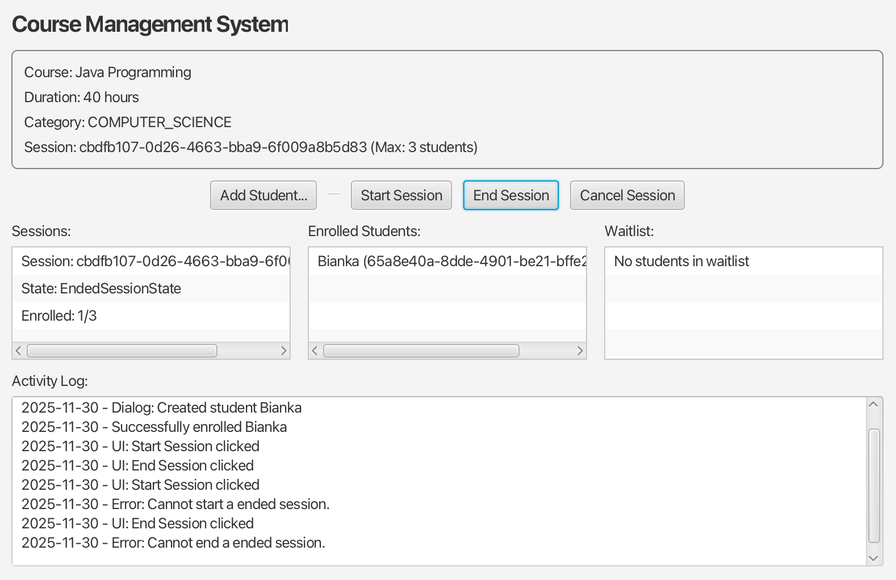

Application de Gestion d'un Centre de Formation
Gestion des Formations, Sessions, Formateurs et Apprenants
Arthur MONTEIRO MIRANDA
Bianka DOS SANTOS GOUVÊA
Contexte & Objectifs
- Faciliter le suivi des formations et la planification des sessions.
- Gérer les formateurs (spécialités) et apprenants (historique).
- Inscriptions avec liste d'attente quand session complète.
- Notifications automatiques (session complète, libération de place).
Exigences Fonctionnelles (Résumé)
- Catalogue: ajouter, modifier, supprimer des formations.
- Sessions: formation, formateur, planning, places limitées, états.
- Acteurs: formateur (spécialités), apprenant (coordonnées, historique).
- Inscriptions: si ouverte et non complète, sinon liste d'attente.
- Notifications: formateur notifié quand session complète.
Architecture MVC
- Modèle: entités métier (Formation, Session, Formateur, Apprenant, Inscription).
- Contrôleur: Singletons
FormationManager et SessionManager.
- Vue: JavaFX construite en code.
- Couplage faible et base extensible.
// Contrôleur (Singleton)
public class SessionManager {
private static final SessionManager INSTANCE = new SessionManager();
private final Map sessions = new HashMap<>();
private SessionManager() {}
public static SessionManager getInstance() { return INSTANCE; }
public Session create(Course course, LocalDate startAt, LocalDate endAt,
int maxPlaces, Teacher teacher) {
Session s = new Session(course, startAt, endAt, maxPlaces, teacher);
sessions.put(s.getId(), s);
course.addSession(s);
return s;
}
}
Note: Course = Formation, Teacher = Formateur, Student = Apprenant dans le code
Modèle – Principales Classes
Formation (titre, durée, catégorie, liste de sessions).Session (formation, formateur, planning, places, état, waitlist).Formateur (spécialités), Apprenant (historique).Inscription, Category (enum).
Note: noms anglais utilisés dans le code (Course, Teacher, Student)
Design Patterns Utilisés
- State: gérer les états de session (ouverte, complète, terminée, annulée).
- Observer: notifier apprenants et formateurs lors de changements.
- Singleton: gestionnaire central
FormationManager, SessionManager.
- Justification: clarté, isolation et simplicité.
// State Pattern
public interface SessionState {
String getNotifyMessage();
default String getLabel() {
return getClass().getSimpleName().replaceFirst("SessionState$", "").toLowerCase();
}
default void subscribe(Session s, Student st) {
throw new IllegalStateException("Cannot subscribe to a " + getLabel() + " session.");
}
default void start(Session s, Teacher t) {
throw new IllegalStateException("Cannot start a " + getLabel() + " session.");
}
// ... autres méthodes (unsubscribe, cancel, end)
}
public class OpenSessionState implements SessionState {
public String getNotifyMessage() { return "Session is now open for subscriptions."; }
public void start(Session s, Teacher t) { s.setState(new StartedSessionState(t)); }
public void cancel(Session s, Teacher t) { s.setState(new CanceledSessionState(t)); }
}
États de Session
- Ouverte → Complète (capacité atteinte).
- Ouverte/Complète → Démarrée.
- Démarrée → Terminée.
- Ouverte/Complète/Démarrée → Annulée.
- Transitions gérées par le State pattern.
Flux d'Inscription & Liste d'Attente
- Apprenant s'inscrit si session ouverte et non complète.
- Si complète: ajout à la
waitlist (FIFO).
- Libération d'une place: promotion automatique.
- Notifications lors de la promotion.
// Session.subscribe (extrait)
public void subscribe(Student student) {
if (isSubscribed(student.getId())) {
throw new IllegalStateException("Student is already subscribed to this session.");
}
// déléguer la logique spécifique à l'état
state.subscribe(this, student);
if (isFull()) {
addToWaitlist(student);
return; // waitlist au lieu de rejet
}
students.put(student.getId(), student);
addObserver(student);
Inscription inscription = new Inscription(student, this);
inscriptions.put(student.getId(), inscription);
student.addInscription(inscription);
if (isFull()) {
notifyObservers("Session " + id + " is now full.");
}
}
private void promoteFromWaitlist() {
if (!isFull() && !waitlist.isEmpty()) {
Student next = waitlist.poll();
subscribe(next);
notifyObservers("Student " + next.getName() + " promoted from waitlist to session " + id);
}
}
Notifications (Observer)
- Observers: formateur + apprenants inscrits.
- Événements: changement d'état, session complète, libération de place.
- Messages simples, extensibles selon besoins.
// Enregistrement des observers
public Session(Course course, LocalDate startAt, LocalDate endAt,
int maxPlaces, Teacher teacher) {
this.course = course;
this.startAt = startAt;
this.endAt = endAt;
this.maxPlaces = maxPlaces;
this.teacher = teacher;
addObserver(teacher); // formateur notifié automatiquement
}
public void setState(SessionState state) {
this.state = state;
String message = state.getNotifyMessage();
System.out.println(message);
notifyObservers(message);
}
Structures de Données
- Maps en mémoire pour catalogue et sessions.
- Map d'inscrits et d'inscriptions par session.
- Queue (LinkedList) pour la liste d'attente.
Conformité aux Contraintes Techniques
- Collections standard Java (List, Map, Queue).
- Patterns conformes aux objectifs pédagogiques.
// Vue JavaFX (extrait)
private void createUI(Stage stage) {
VBox root = new VBox(10);
Button enrollAlice = new Button("Inscrire Alice");
enrollAlice.setOnAction(e -> enrollStudent(student1));
// ... autres composants et listes
stage.setScene(new Scene(new ScrollPane(root), 800, 600));
}
Aperçu de l’Interface

Limitations & Extensions Futures
- Non implémenté: pré-requis, reporting, formations hybrides.
- Decorator (options formation) et Factory (types sessions) non implémentés.
- Évolutions possibles: validation pré-requis, rapports, persistance BD.
Conclusion
- Application fonctionnelle conforme aux exigences principales.
- Code organisé, patterns cohérents (State, Observer, Singleton).
- Base extensible pour futures fonctionnalités.